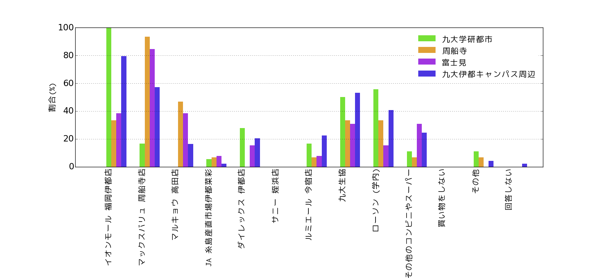
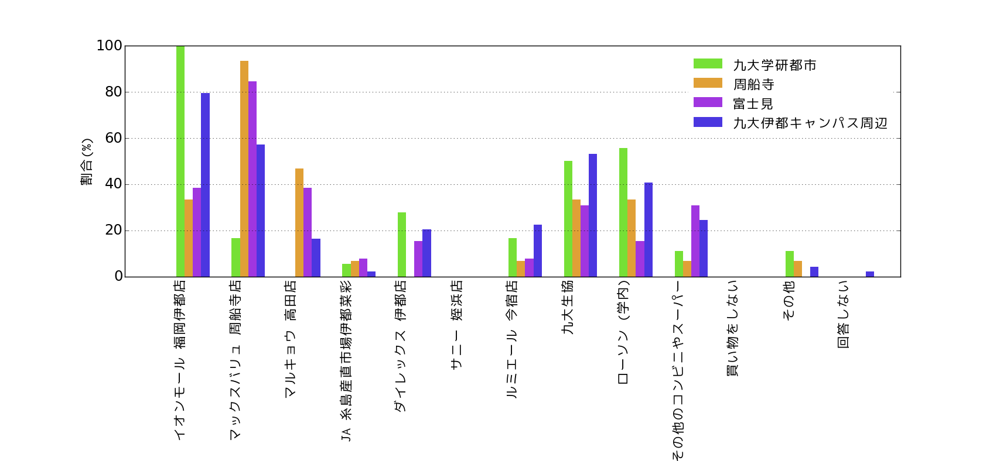
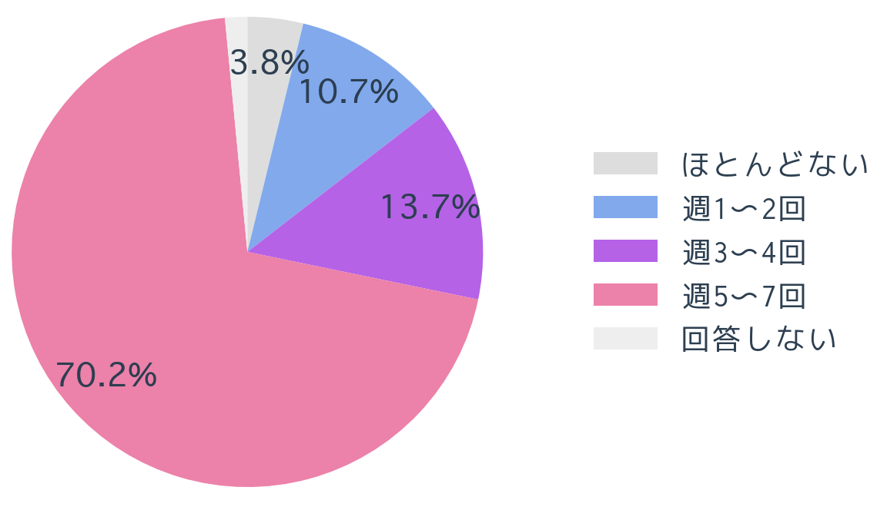
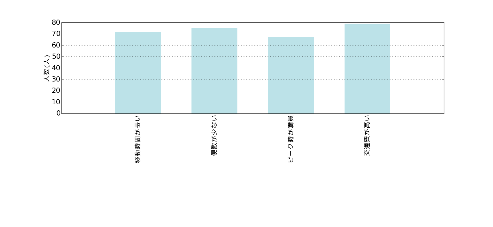

アンケート集計結果
本活動Webサイトにて実施したアンケートは、
こちらです。
このページでは、
このアンケートの回答を集計したものを掲載しています。
設問1.回答者について
1-1.性別
回答者のうち3分の2が男性であるという結果となりました。
1-2.九州大学との関係
「その他」を選んだ人のうち、3人はその関係に関しては回答しておらず、1人は九州大学の元職員でした。
| 学生 |
職員 |
その他 |
回答しない |
| 122人 |
6人 |
4人 |
2人 |
1-3.住んでいる地域
「その他」としては、実家から通っている人や、貝塚や箱崎などの箱崎キャンパス周辺の地域に住んでいるという回答がありました。
| 姪浜 |
今宿 |
九大学研都市 |
周船寺 |
波多江 |
富士見 |
| 3人 |
4人 |
18人 |
15人 |
5人 |
13人 |
| 九大伊都キャンパス周辺 |
その他 |
回答しない |
| 49人 |
26人 |
1人 |
設問2.伊都キャンパス周辺での普段の買い物について
2-1.伊都キャンパス周辺でよく利用するお店について
2-1-1.伊都キャンパス周辺での食材の購入場所
食材の購入場所-男女別と全回答
| 店舗 | 男性 | 女性 | 全回答 |
|---|
| イオンモール福岡伊都店 | 57人 | 26人 | 85人 |
| マックスバリュ 周船寺店 | 49人 | 15人 | 66人 |
| マルキョウ高田店 | 18人 | 6人 | 25人 |
| JA糸島産直市場伊都菜彩 | 4人 | 4人 | 8人 |
| ダイレックス 伊都店 | 15人 | 4人 | 19人 |
| サニー 姪浜店 | 0人 | 2人 | 2人 |
| ルミエール今宿店 | 15人 | 6人 | 22人 |
| 九大生協 | 45人 | 18人 | 64人 |
| ローソン(学内) | 45人 | 18人 | 64人 |
| その他のコンビニやスーパー | 19人 | 1人 | 21人 |
| 買い物をしない | 3人 | 0人 | 3人 |
| その他 | 6人 | 6人 | 13人 |
| 回答しない | 1人 | 0人 | 1人 |
食材の購入場所-地域別
| 店舗 | 九大学研都市 | 周船寺 | 富士見 | 伊都キャンパス周辺 |
|---|
| イオンモール福岡伊都店 | 18人 | 5人 | 5人 | 39人 |
| マックスバリュ 周船寺店 | 3人 | 14人 | 9人 | 28人 |
| マルキョウ高田店 | 0人 | 7人 | 5人 | 8人 |
| JA糸島産直市場伊都菜彩 | 1人 | 1人 | 1人 | 1人 |
| ダイレックス 伊都店 | 5人 | 0人 | 2人 | 10人 |
| サニー 姪浜店 | 0人 | 0人 | 0人 | 0人 |
| ルミエール今宿店 | 3人 | 1人 | 1人 | 11人 |
| 九大生協 | 9人 | 5人 | 4人 | 26人 |
| ローソン(学内) | 10人 | 5人 | 2人 | 10人 |
| その他のコンビニやスーパー | 2人 | 1人 | 4人 | 12人 |
| 買い物をしない | 0人 | 0人 | 0人 | 0人 |
| その他 | 2人 | 2人 | 0人 | 2人 |
| 回答しない | 0人 | 0人 | 0人 | 1人 |
 食材の購入場所-全回答の集計
食材の購入場所-男女別

食材の購入場所-住んでいる地域別
食材の購入場所-全回答の集計
食材の購入場所-男女別

食材の購入場所-住んでいる地域別
その他の回答としては、
「ファミリーマート元岡店、九大学研都市店」「ローソン田尻店」のようなコンビニや、
「ハローデイ姪浜店」「西鉄ストア」「ドラッグコスモス伊都店」のようなスーパーマーケットやドラッグストアなどがあげられました。
よく利用されている店舗としては、「イオンモール福岡伊都店」と「マックスバリュ周船寺店」が多いようです。
男女間に利用するスーパーマーケットについての差は見られませんでした。
しかし、
住んでいる地域別に見れば、「九大学研都市」に住む人々は「イオンモール福岡伊都店」を多く利用し、
「周船寺」や「富士見」に住む人々は「マックスバリュ 周船寺店」を多く利用する傾向にあります。
食材を買う際には、
住んでいる地域で最も近いスーパーマーケットを利用する傾向にあることがわかります。
2-1-2.伊都キャンパス周辺での日用品の購入場所
日用品の購入場所-男女別と全回答
| 店舗 | 男性 | 女性 | 全回答 |
|---|
| イオンモール福岡伊都店 | 56人 | 29人 | 87人 |
| マックスバリュ 周船寺店 | 32人 | 8人 | 41人 |
| マルキョウ高田店 | 9人 | 5人 | 14人 |
| JA糸島産直市場伊都菜彩 | 0人 | 0人 | 0人 |
| ダイレックス 伊都店 | 10人 | 2人 | 12人 |
| サニー 姪浜店 | 0人 | 3人 | 3人 |
| ルミエール今宿店 | 13人 | 2人 | 15人 |
| 九大生協 | 17人 | 11人 | 29人 |
| ローソン(学内) | 17人 | 11人 | 28人 |
| その他のコンビニやスーパー | 5人 | 0人 | 5人 |
| 買い物をしない | 0人 | 0人 | 0人 |
| その他 | 12人 | 6人 | 19人 |
| 回答しない | 1人 | 0人 | 1人 |
日用品の購入場所-地域別
| 店舗 | 九大学研都市 | 周船寺 | 富士見 | 伊都キャンパス周辺 |
|---|
| イオンモール福岡伊都店 | 18人 | 6人 | 8人 | 36人 |
| マックスバリュ 周船寺店 | 2人 | 10人 | 7人 | 17人 |
| マルキョウ高田店 | 0人 | 4人 | 3人 | 5人 |
| JA糸島産直市場伊都菜彩 | 0人 | 0人 | 0人 | 0人 |
| ダイレックス 伊都店 | 3人 | 0人 | 1人 | 6人 |
| サニー 姪浜店 | 0人 | 0人 | 0人 | 0人 |
| ルミエール今宿店 | 3人 | 1人 | 0人 | 7人 |
| 九大生協 | 3人 | 3人 | 3人 | 11人 |
| ローソン(学内) | 2人 | 3人 | 1人 | 11人 |
| その他のコンビニやスーパー | 0人 | 0人 | 1人 | 4人 |
| 買い物をしない | 0人 | 0人 | 0人 | 0人 |
| その他 | 2人 | 2人 | 1人 | 6人 |
| 回答しない | 0人 | 0人 | 0人 | 1人 |
日用品の購入場所-全回答の集計
日用品の購入場所-男女別
日用品の購入場所-住んでいる地域別
その他の回答としては、「ナフコ元岡店」「ドラッグコスモス伊都店」「GooDay周船寺店」があり、
特に、
「ナフコ元岡店」に関しては9人の回答者がいました。
日用品の場合、
最もよく利用されている店舗は「イオンモール福岡伊都店」であることがわかります。
「イオンモール福岡伊都店」は、
選択肢の中で最も規模の大きなスーパーマーケットです。
そのため、
日用品の品揃えは他の選択肢の店舗よりも豊富です。
その事実がこの結果として表れました。
こちらも、
男女間の結果にそれほど大きな違いは見られませんでした。
しかし、「富士見」や「周船寺」に住む人々はの中には日用品も「マックスバリュ周船寺店」で買う人が多く、
食材ほどではありませんが、
日用品の場合も住んでいる地域で最も近い店舗を選ぶ傾向があることがわかります。
2-2.伊都キャンパスでの買い物の頻度
買い物の頻度-男女別と全回答
| 頻度 | 男性 | 女性 | 全回答 |
|---|
| 週1〜2回 | 54人 | 22人 | 87人 |
| 週3〜4回 | 19人 | 9人 | 41人 |
| 種5〜7回 | 12人 | 6人 | 14人 |
| 買い物をしない | 4人 | 4人 | 0人 |
| 回答しない | 0人 | 0人 | 12人 |
買い物の頻度-地域別
| 頻度 | 九大学研都市 | 周船寺 | 富士見 | 伊都キャンパス周辺 |
|---|
| 週1〜2回 | 8人 | 6人 | 6人 | 36人 |
| 週3〜4回 | 4人 | 6人 | 5人 | 7人 |
| 週5〜7回 | 5人 | 2人 | 0人 | 6人 |
| 買い物をしない | 1人 | 1人 | 1人 | 0人 |
| 回答しない | 3人 | 0人 | 0人 | 0人 |
 買い物の頻度
買い物の頻度
 男女別・住んでいる地域別の買い物の頻度
男女別・住んでいる地域別の買い物の頻度
買い物の頻度は、
住んでいる地域別に見ると大きく異なることがわかります。
「九大学研都市」に住む人々は「週1〜2回」と答えた人が30%であるのに対し、
「伊都キャンパス周辺」に住む人々は「週1〜2回」と答えた人が73%と2倍以上となっています。
スーパーマーケットが近くにない地域に住んでいる人ほど、
買い物の頻度が減少していくことがわかります。
2-3.買い物に関して不便に思うこと
買い物に関して不満に思うこと
| 不満 | 男性 | 女性 | 全回答 |
|---|
| 場所が遠い | 71人 | 31人 | 104人 |
| 交通手段が少ない | 36人 | 17人 | 55人 |
| 品揃えが悪い | 15人 | 9人 | 26人 |
| 価格が高い | 16人 | 6人 | 23人 |
| 荷物を運ぶことが大変 | 29人 | 16人 | 46人 |
買い物に関して不満に思うこと-地域別
| 不満 | 九大学研都市 | 周船寺 | 富士見 | 伊都キャンパス周辺 |
|---|
| 場所が遠い | 11人 | 7人 | 12人 | 45人 |
| 交通手段が少ない | 4人 | 5人 | 7人 | 23人 |
| 品揃えが悪い | 3人 | 5人 | 0人 | 8人 |
| 価格が高い | 6人 | 1人 | 0人 | 9人 |
| 荷物を運ぶことが大変 | 8人 | 1人 | 4人 | 21人 |
買い物に関して不便に思うこと
買い物に関して不便に思うこと-男女別
買い物に関して不便に思うこと-地域別
「その他」の意見としては、
「パソコンのパーツが買えない」という意見も見られました。
「場所が遠い」が不便に感じることとしては一番多いことがわかります。
地域別に見れば、
「富士見」と「伊都キャンパス周辺」に住む人々の9割が「場所が遠い」に回答しています。
また、
「交通手段が少ない」ことが2番目に多い不満となり、
交通手段が少なければ「荷物を運ぶことが大変」という不満につながるようで、
これが3番目に多い結果となったと考えられます。
この結果からも、
スーパーマーケットの有無は、
その居住地域の満足度を大きく左右する指標であると言えます。
設問3.交通手段について
3-1.伊都キャンパス周辺にアクセスするときの交通手段
伊都キャンパス周辺の交通手段
| 交通手段 | 男性 | 女性 | 全回答 |
|---|
| 徒歩 | 30人 | 15人 | 46人 |
| 自転車 | 54人 | 23人 | 79人 |
| 原動機付自転車 | 21人 | 1人 | 24人 |
| 自動車 | 5人 | 4人 | 9人 |
| 昭和バス | 51人 | 31人 | 84人 |
| 西鉄バス | 5人 | 4人 | 9人 |
| 九大キャンパス間バス | 2人 | 5人 | 8人 |
| 地下鉄空港線、JR筑肥線 | 12人 | 12人 | 26人 |
| 地下鉄貝塚線 | 5人 | 4人 | 10人 |
| その他 | 1人 | 0人 | 2人 |
| 回答しない | 0人 | 0人 | 0人 |
伊都キャンパス周辺の交通手段-地域別
| 交通手段 | 九大学研都市 | 周船寺 | 富士見 | 伊都キャンパス周辺 |
|---|
| 徒歩 | 8人 | 3人 | 1人 | 23 |
| 自転車 | 11人 | 9人 | 8人 | 35人 |
| 原動機付自転車 | 15人 | 6人 | 9人 | 31人 |
| 自動車 | 1人 | 1人 | 1人 | 0人 |
| 昭和バス | 15人 | 6人 | 9人 | 31人 |
| 西鉄バス | 1人 | 1人 | 1人 | 2人 |
| 九大キャンパス間バス | 2人 | 0人 | 1人 | 1人 |
| 地下鉄空港線、JR筑肥線 | 3人 | 0人 | 1人 | 6人 |
| 地下鉄貝塚線 | 1人 | 0人 | 1人 | 4人 |
| その他 | 0人 | 0人 | 0人 | 1人 |
| 回答しない | 0人 | 0人 | 0人 | 0人 |
 伊都キャンパス周辺の交通手段
伊都キャンパス周辺の交通手段-男女別
伊都キャンパス周辺の交通手段-地域別
伊都キャンパス周辺の交通手段
伊都キャンパス周辺の交通手段-男女別
伊都キャンパス周辺の交通手段-地域別
伊都キャンパス周辺にアクセスする際に利用されている交通手段として多いのは、
「自転車」と「昭和バス」でした。
また、男女別に見ると、
「原動機付自転車」を利用する割合は、
女性よりも男性の方が圧倒的に多いことがわかります。
これに対し、
女性は「昭和バス」を利用している人が多いようです。
地域別に見ると、
「原動機付自転車」や「昭和バス」などのエンジン駆動の交通手段を最も多く利用している地域は、
「九大学研都市」であることがわかります。また、「富士見」と「周船寺」では、
徒歩で伊都キャンパスまでアクセスする人が少ないようです。
3-2.伊都キャンパス周辺にアクセスする頻度
伊都キャンパス周辺にアクセスする頻度
| 頻度 | 男性 | 女性 | 全回答 |
|---|
| 週1〜2回 | 9人 | 5人 | 14人 |
| 週3〜4回 | 11人 | 7人 | 18人 |
| 種5〜7回 | 64人 | 26人 | 92人 |
| ほとんどない | 1人 | 3人 | 5人 |
| 回答しない | 2人 | 0人 | 2人 |
伊都キャンパス周辺にアクセスする頻度-地域別
| 頻度 | 九大学研都市 | 周船寺 | 富士見 | 伊都キャンパス周辺 |
|---|
| 週1〜2回 | 0人 | 3人 | 1人 | 6人 |
| 週3〜4回 | 2人 | 1人 | 2人 | 8人 |
| 週5〜7回 | 15人 | 10人 | 10人 | 31人 |
| ほとんどない | 1人 | 0人 | 0人 | 0人 |
| 回答しない | 0人 | 0人 | 0人 | 2人 |

伊都キャンパス周辺にアクセスする頻度
男女別・住んでいる地域別の伊都キャンパス周辺にアクセスする
伊都キャンパス周辺にアクセスする頻度は、
性別や住んでいる地域によらず、
約7割の人々が週5〜7回であることがわかります。
3-3.伊都キャンパス周辺で生活のための買い物をする際の交通手段
買い物の交通手段
| 交通手段 | 男性 | 女性 | 全回答 |
|---|
| 徒歩 | 36人 | 19人 | 55人 |
| 自転車 | 52人 | 23人 | 76人 |
| 原動機付自転車 | 21人 | 1人 | 23人 |
| 自動車 | 8人 | 6人 | 14人 |
| 昭和バス | 32人 | 19人 | 51人 |
| 西鉄バス | 1人 | 0人 | 1人 |
| 九大キャンパス間バス | 0人 | 2人 | 2人 |
| 地下鉄空港線、JR筑肥線 | 2人 | 5人 | 7人 |
| 地下鉄貝塚線 | 0人 | 1人 | 1人 |
| その他 | 2人 | 1人 | 4人 |
| 回答しない | 0人 | 0人 | 0人 |
買い物の交通手段-地域別
| 交通手段 | 九大学研都市 | 周船寺 | 富士見 | 伊都キャンパス周辺 |
|---|
| 徒歩 | 11人 | 7人 | 4人 | 20人 |
| 自転車 | 9人 | 7人 | 10人 | 35人 |
| 原動機付自転車 | 5人 | 3人 | 3人 | 7人 |
| 自動車 | 1人 | 2人 | 2人 | 1人 |
| 昭和バス | 4人 | 3人 | 5人 | 29人 |
| 西鉄バス | 0人 | 0人 | 0人 | 1人 |
| 九大キャンパス間バス | 0人 | 0人 | 0人 | 0人 |
| 地下鉄空港線、JR筑肥線 | 0人 | 0人 | 0人 | 2人 |
| 地下鉄貝塚線 | 0人 | 0人 | 0人 | 1人 |
| その他 | 0人 | 0人 | 0人 | 1人 |
| 回答しない | 0人 | 0人 | 0人 | 0人 |
買い物の交通手段
買い物の交通手段-男女別
買い物の交通手段-地域別
買い物の際に利用される交通手段は、「自転車」が最も多く、
伊都キャンパス周辺にアクセスする際の交通手段と比べて、
「徒歩」が増加し、「昭和バス」が減少していることがわかります。
地域別に見れば、
「伊都キャンパス周辺」では買い物の際に、
「昭和バス」を利用する割合が他の地域よりも2倍以上高いことがわかります。
「伊都キャンパス周辺」にはスーパーマーケットがないという事実が、
この結果に結びついていると考えられます。
3-4.伊都キャンパス周辺の交通手段に関して不便に思うこと
交通手段に関して不便に思うこと
| 不満 | 男性 | 女性 | 全回答 |
|---|
| 移動時間が長い | 46人 | 25 人 | 72人 |
| 便数が少ない | 48人 | 25 人 | 75人 |
| ピーク時が満員 | 44人 | 22 人 | 67人 |
| 交通費が高い | 50人 | 28 人 | 79人 |
交通手段に関して不便に思うこと-住んでいる地域別
| 不満 | 九大学研都市 | 周船寺 | 富士見 | 伊都キャンパス周辺 |
|---|
| 移動時間が長い | 10人 | 8人 | 6人 | 22人 |
| 便数が少ない | 7人 | 5人 | 10人 | 26人 |
| ピーク時が満員 | 10人 | 5人 | 8人 | 18人 |
| 交通費が高い | 14人 | 5人 | 8人 | 28人 |

交通手段に関して不便に思うこと
交通手段に関して不便に思うこと-男女別
交通手段に関して不便に思うこと-地域別
「その他」の不満としては、
「終バスが早い」「坂がきつい」「雨風が強い」などがありました。
設問4.もし、伊都キャンパス周辺にスーパーマーケットができるなら
4-1.利用したいか
ほぼ、利用したいという結果となりました。
4-2.どこにあるとよいか
どこにあるとよいか
| 場所 | 回答数 |
|---|
| 伊都キャンパス内 | 50人 |
| 伊都キャンパス正面入り口を出てすぐの場所 | 83人 |
| 産学連携交流センター横 | 86人 |
| その他 | 8人 |
 どこにあるとよいか
どこにあるとよいか
「その他」の意見として、
「ナフコ元岡店のとなり」や「徒歩圏内」という回答があり、
元岡小学校より伊都キャンパス側に求められていることがわかりました。
4-3.どのようなスーパーマーケットがあるとよいか
4-3-1.何を買いたいか
何を買いたいか-1
| 品物 | 回答数 |
|---|
| 野菜や果物 | 110人 |
| 肉類 | 109人 |
| 魚介類 | 92人 |
| 米 | 69人 |
| パン類 | 95人 |
| 乳製品 | 89人 |
| 卵 | 94人 |
| お菓子類 | 84人 |
何を買いたいか-2
| 品物 | 回答数 |
|---|
| 惣菜品 | 84人 |
| 弁当 | 70人 |
| 冷凍食品 | 71人 |
| 飲み物 | 104人 |
| お酒 | 70人 |
| 調味料 | 74人 |
| 薬 | 64人 |
| 衛生用品 | 72人 |
何を買いたいか-3
| 品物 | 回答数 |
|---|
| 洗剤 | 62人 |
| 台所用品 | 54人 |
| トイレ用品 | 54人 |
| おふろ用品 | 51人 |
| 回答しない | 2人 |
| その他 | 5人 |
 何を買いたいか
何を買いたいか
野菜や果物、
肉類などの生鮮食品や、
すぐに消費してしまう飲み物が、
買いたいものとして多いという結果となりました。
日用品よりも食材が求められているようです。
生鮮食品のような賞味期限、消費期限の短い食品が、
冷凍食品などの保存しやすい食品よりも求められている傾向があります。
どのようなサービス、施設があるとよいか
どのようなサービス、施設があるとよいか-1
| サービス、施設 | 回答数 |
|---|
| レストラン | 49人 |
| カフェ | 40人 |
| ファストフード店 | 49人 |
| 弁当屋 | 45人 |
| スポーツ用品店 | 13人 |
| ファッション専門店 | 14人 |
どのようなサービス、施設があるとよいか-2
| サービス、施設 | 回答数 |
|---|
| 家電量販店 | 27人 |
| 雑貨店 | 49人 |
| 文房具店 | 55人 |
| 銀行 | 70人 |
| 回答しない | 1人 |
| その他 | 8人 |
どのようなサービス、施設があるとよいか
「その他」としては、
「ゲームセンター」や「アミューズメト施設」といった、
娯楽施設があると嬉しいという意見がありました。
4-3-3.その他の要望
その他の要望
| その他の要望 | 回答数 |
|---|
| なるべく安くしてほしい | 93人 |
| 生協のサービスと連携してほしい | 54人 |
| 複数の銀行のATMを設置してほしい | 66人 |
| 品揃えを豊富にしてほしい | 71人 |
| フリーWifiの入る自由なスペースがほしい | 31人 |
| イベントが開けるような教室のような場所がほしい | 14人 |
| 夜遅くまで営業してほしい | 81人 |
| 24時間営業してほしい | 59人 |
| 回答しない | 0人 |
| その他 | 6人 |
その他の要望
「その他」の意見としては、
「駐車スペースを確保してほしい」「朝食が食べたくなるような飲食店がほしい」「生協と関わってほしい」「生鮮食品を多く取り扱ってほしい」などがありました。
⇦もどる すすむ⇨
トップページへ